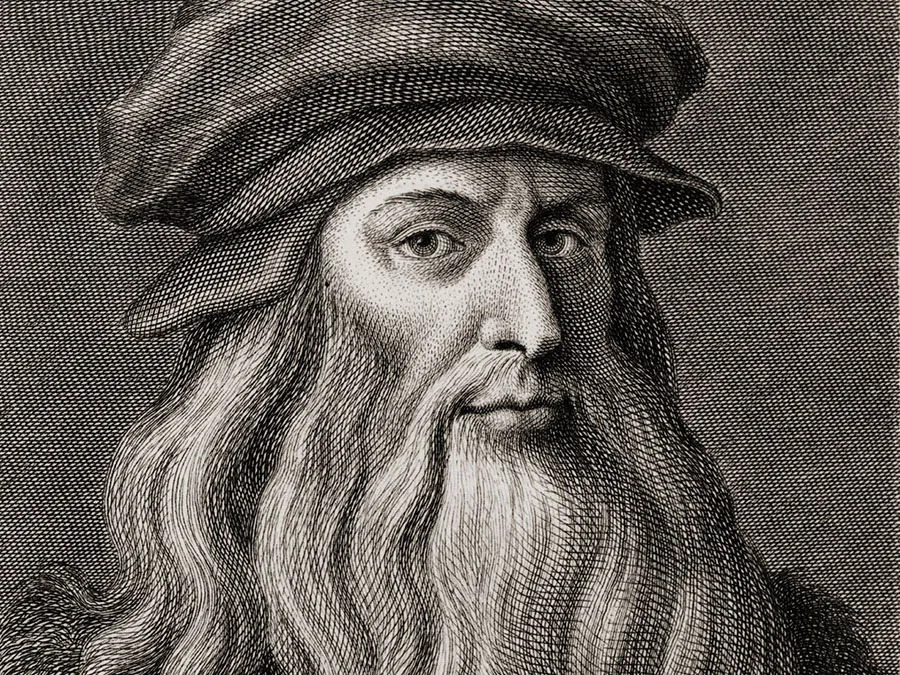
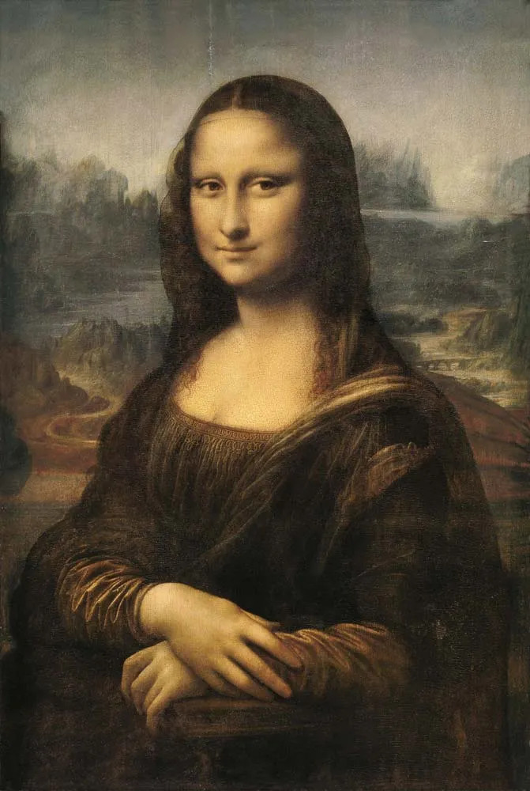
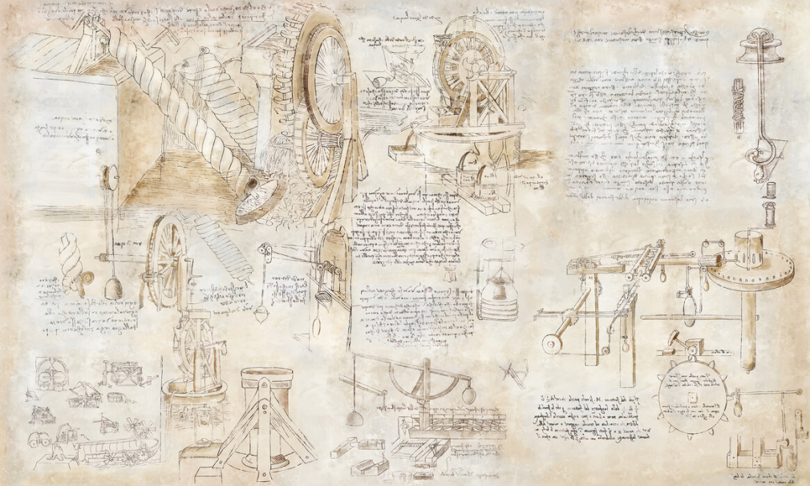

Leonardo da Vinci is born on April 15 in Vinci, Italy.
Leonardo becomes an apprentice to the artist Andrea del Verrocchio in Florence
Leonardo is admitted to the Florence painters' guild.
Leonardo creates his first known painting, "The Baptism of Christ," in collaboration with Verrocchio.
Leonardo enters the service of Ludovico Sforza, the Duke of Milan, and works as a court artist and engineer.
Leonardo begins his studies and sketches on various subjects, including anatomy, architecture, and flying machines.
Leonardo paints "The Last Supper" on the wall of the Convent of Santa Maria delle Grazie in Milan.
The French capture Milan, and Leonardo leaves the city.
Leonardo works in Florence and creates several notable paintings during this period, including the "Mona Lisa."
Leonardo returns to Milan and works for the French governor Charles d'Amboise.
Leonardo enters the service of Francis I, the King of France, and moves to the Château du Clos Lucé near Amboise.
Leonardo enters the service of Francis I, the King of France, and moves to the Château du Clos Lucé near Amboise.
Leonardo Da Vinci
Leonardo da Vinci was a visionary artist, scientist, and polymath of the Renaissance era, renowned for his creative genius and innovative thinking. Among his many achievements, his exploration of the Canon stands out as a testament to his extraordinary mind.
The Canon, a term used to describe a set of principles or rules, was a concept that Leonardo da Vinci applied across various disciplines. In his artistic endeavors, he formulated the Golden Ratio, a mathematical proportion that is aesthetically pleasing and often found in nature's design. This ratio, also known as the divine proportion, guided him in creating harmonious and balanced compositions in his artworks, such as the famous painting Mona Lisa.
Conlusion
Leonardo da Vinci's exploration of the Canon showcased his unparalleled ability to bridge the realms of art and science, leaving an enduring legacy that continues to inspire and captivate. His mastery of the Golden Ratio and his keen understanding of proportion and symmetry elevated his artworks to timeless expressions of beauty and balance. Beyond the canvas, his application of the Canon's principles revolutionized anatomical studies, leading to a deeper understanding of the human body.
Leonardo's genius lay in his holistic approach to knowledge, seamlessly intertwining diverse disciplines into a harmonious tapestry of creativity and innovation. His Canon's Effect was not confined to his lifetime; it echoes through the annals of history, influencing generations of artists, scientists, and thinkers. As we reflect on Leonardo da Vinci's contributions, we are reminded of the power of curiosity, imagination, and the boundless potential of the human mind to reshape our understanding of the world.
Effect

Effect of the canon
The Canon Effect
extended beyond art, influencing Leonardo's scientific and anatomical studies as well. His meticulous observations of the human body were guided by proportion and symmetry, aiding his anatomical accuracy. This approach led to groundbreaking insights into human physiology that continue to influence medical understanding.


.jpg)